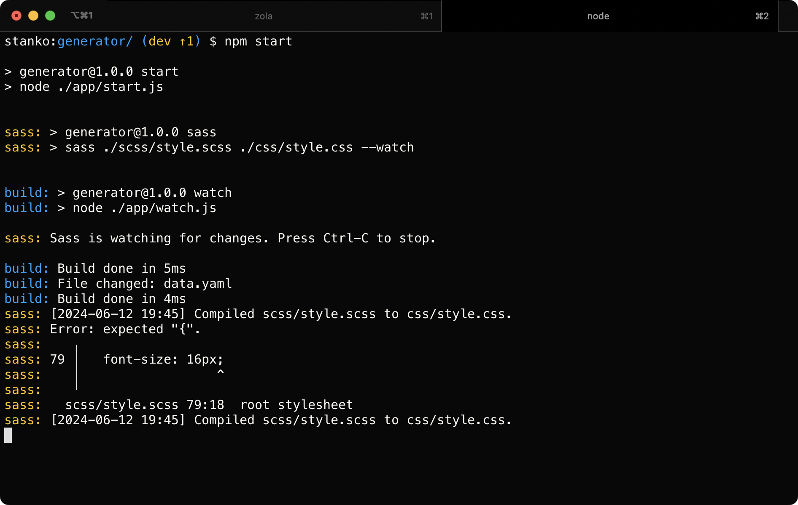

If you encountered a case where you wanted to run multiple commands in parallel, the usual suggestion is to use the shell's & operator to send commands to the background. This approach kind of works, but it has its quirks.
I often ended up with a process hanging in the background, multiple outputs being mangled, or the output of some commands completely missing. Bash scripting wizards can probably solve all of these issues, but I turned to JavaScript, as it is the language I know best.
If you’re eager to see the code, feel free to jump to it.
Why not an existing library? #
In my professional projects, I would probably just use concurrently. However, this time I decided to write a poor man's version of it. Although simple and basic, it covers my specific use case.
It was mostly for learning purposes, but sometimes I create things from scratch for fun or to avoid installing a large library for a tiny piece of it.
My requirements #
- Run multiple commands in parallel.
- Terminate all of the commands if any of them fail.
- Prefix each command's output with its color-codedIn the finished version, I added an option to disable colors, as I know some people really don't like colors in their terminals name.
I also decided to keep it simple:
- No CLI version to avoid parsing the arguments.
- Name (prefix) should be a mandatory input.
Usage #
To use the script, you need to import it and pass the list of your commands (along with their names) to it. Like this:
import { Runner } from './runner.js';
const tasks = [
{ name: 'sass', command: 'npm run sass' },
{ name: 'build', command: 'npm run build' },
];
new Runner(tasks);
This is how the script looks in action:

Source code #
Here is the complete script:
import { spawn } from 'child_process';
export class Runner {
tasks = [];
exiting = false;
colors = [
'\x1b[33m', // yellow
'\x1b[34m', // blue
'\x1b[35m', // magenta
'\x1b[36m', // cyan
];
/**
* Create a new runner.
* @param {Object[]} tasks - List of tasks to run in parallel.
* @param {string} tasks[].name - The name of the task, used as a prefix.
* @param {string} tasks[].command - The command to run including arguments.
*/
constructor(tasks, useColors = true) {
tasks.forEach((task, index) => {
// Split the command into command and arguments
const args = task.command.split(' ');
const command = args.shift();
// Color the process prefix for output
const color = this.colors[index % this.colors.length];
const reset = '\x1b[0m';
const name = useColors ? `${color}${task.name}:${reset}` : `${task.name}:`;
// Spawn the child process
const childProcess = spawn(command, args);
// Prefix the output and write to stdout
childProcess.stdout.on('data', (data) => {
process.stdout.write(this.addPrefix(data.toString(), name));
});
// Prefix the error output and write to stderr
childProcess.stderr.on('data', (data) => {
process.stderr.write(this.addPrefix(data.toString(), name));
});
// When any process closes, start termination of all processes
childProcess.on('close', (code, signal) => {
if (code !== null) {
console.log(`${name} exited with code ${code}`);
} else if (signal) {
console.log(`${name} was killed with signal ${signal}`);
}
this.exit();
});
// If any process fails to start, terminate all processes
childProcess.on('error', (error) => {
console.error(`${name} failed to start: ${error.message}`);
this.exit();
});
// Add task to the list
this.tasks.push({
name,
childProcess,
});
});
}
// Terminates all processes
exit() {
if (!this.exiting) {
this.exiting = true;
this.tasks.forEach((task) => {
if (!task.childProcess.killed) {
task.childProcess.kill();
}
});
}
}
// Add prefix to each line of the text
// Skips empty lines
addPrefix(text, prefix) {
return text
.split('\n')
.map((line) => (line ? `${prefix} ${line}` : ''))
.join('\n');
}
}
Approach #
If you are still reading, you are probably interested in what I actually did.
Code in the following steps is simplified to make it easier to follow. Check the source code above for the implementation details.
Spawn a process for each command #
As its name suggests, the Node.js native spawn method can be used to spawn a child process for each of the commands:
// Split the command into the command and its arguments
// For example, "npm run build" becomes:
// - command: "npm"
// - args: ["run", "build"]
const args = task.command.split(' ');
const command = args.shift();
// Spawn the child process
const childProcess = spawn(command, args);
We'll store a reference to the child process and its name in order to use it later:
this.tasks.push({
name,
childProcess,
});
Exit if any of the commands fail #
Each process has error and close events. We'll listen to them, and if they happen terminate all of the other processes:
// When any of the processes exits, terminate the others
// (we'll do the same for the "error" event)
childProcess.on('close', () => {
// Here we use the references we created in the previous step
this.tasks.forEach((task) => {
if (!task.childProcess.killed) {
task.childProcess.kill();
}
});
});
Prefix each command's output #
The child process's stdout and stderr data events are triggered whenever the process outputs data or errors. This allows us to listen to these events, prefix the output, and forward it to the main script's output.
// Prefix the output and write to stdout (we'll do the same for stderr)
childProcess.stdout.on('data', (data) => {
process.stdout.write(this.addPrefix(data.toString(), name));
});
Please note that name is already colored using the method I wrote in the past.
The addPrefix method is fairly simple. It splits the text into lines and prefixes it with the command's name:
addPrefix(text, prefix) {
return text
// Split into lines
.split('\n')
// Prefix or skip empty lines
.map((line) => (line ? `${prefix} ${line}` : ''))
// Join the lines again
.join('\n');
And that is pretty much it,
Conclusion #
I hope for two things - that you'll find the script useful, and that this post will inspire you to try hacking on your own before reaching out for an existing library.
My Runner is less than a hundred lines of code and I plan to continue using it in small projects. Feel free to use and modify it to your liking.
Of course, if you want something more robust, stick with something like concurrently, but use these opportunities to learn something new.